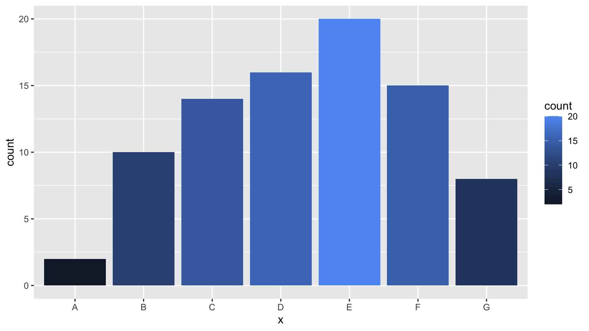

Chapter 7 China choropleth map
Jialu Xia and Danyang Han
library(jsonlite)
library(tidyverse)
library(hash)
library(ggplot2)
library(maptools)
library(tidyr)
library(rgdal)
library(here)
library(hchinamap)
library(magrittr)
library(data.table)
library(mapproj)
library(shadowtext)
library(leafletCN)7.1 Overview
From a choropleth map of Covid-19 spread, we could clearly see the number of confirmed cases and severity in each area on the map. We would like to introduce some techniques to plot choropleth map with R. There are different types of maps, like the world map, maps of Continents and maps of Countries etc,.
Different maps may require different packages to plot. Here we typically explore maps of China. As a running example, we collected China’s Covid-19 data and start from ggplot, a tool we learned in the lectures. In addition to this, we practiced hchinamap and leafletCN to plot interactive maps.
7.2 Data Collection
We web-scarped China’s Covid-19 data. The data set includes daily updates of confirmed cases and death for each city in China.
url = 'https://view.inews.qq.com/g2/getOnsInfo?name=disease_h5&callback=1580373566110'
x = readLines(url, encoding="UTF-8")
x = sub("^\\d+", "", x)
x = sub("^\\(", "", x)
x = sub("\\)$", "", x)
y = fromJSON(x)
d = fromJSON(y$data)
h = d$areaTree$children[[1]]
names_dic = hash(c("香港", "上海", "新疆", "台湾", "四川", "广东", "陕西",
"福建", "内蒙古", "天津", "河北", "江苏", "山东", "浙江",
"辽宁", "山西", "河南", "重庆", "云南", "北京", "黑龙江",
"湖南", "广西", "宁夏", "吉林", "西藏", "海南", "澳门",
"江西", "青海", "湖北", "甘肃", "安徽", "贵州" ),
c("Hongkong", "Shangahi", "Xinjiang", "Taiwan", "Sichuan", "Guangdong","Shannxi",
"Fujian", "Inner Mongolia", "Tianjing", "Hebei","Jiangsu", "Shandong", "Zhejiang",
"Liaoning","Shanxi", "Henan", "Chongqin", "Yunnan", "Beijing","Heilongjiang",
"Hunan", "Guangxi","Ningxia","Jilin","Tibet","Hainan", "Macao",
"Jiangxi","Qinghai", "Hubei", "Gansu", "Anhui" ,"Guizhou" )
)
name_en = values(names_dic, keys = h$name, USE.NAMES = FALSE)
data = data.frame(h$name, name_en, h$total$confirm)
#rename column name
data<-data %>%
rename(
province_CH=h.name,
province_EN=name_en,
total_confirm=h.total.confirm
)
data$province_CH=as.factor(data$province_CH)
data$province_EN=as.factor(data$province_EN)
write.csv(file='Heatmap_data.csv',data, fileEncoding = 'UTF-8')## province_CH province_EN total_confirm
## 1 香港 Hongkong 5479
## 2 上海 Shangahi 1285
## 3 台湾 Taiwan 607
## 4 四川 Sichuan 792
## 5 陕西 Shannxi 487
## 6 广东 Guangdong 1972The dataset we use here is a 34x3 data frame:
province_CH: province name in Chinese
province_EN: province name in English
total_confirm: total confirmed cases
We are gonna plot total confirmed cases.
7.3 Static Map with ggplot
Since ggplot does not have build-in China map, we download shape files from the “Capital of Statistics” webiste and prepare the shape data for ggplot.
7.3.1 Prepare the shape data of China
dsn<-"resources/china_choropleth_map/china-province-border-data/bou2_4p.shp"
layer<-"bou2_4p"
china_map <- rgdal::readOGR(dsn=dsn, layer=layer)## OGR data source with driver: ESRI Shapefile
## Source: "/Users/joycerobbins/cc20/resources/china_choropleth_map/china-province-border-data/bou2_4p.shp", layer: "bou2_4p"
## with 925 features
## It has 7 fields
## Integer64 fields read as strings: BOU2_4M_ BOU2_4M_ID###Note: we attached external spetial data of china, named "china-province-border-data" and it includes "bou2_4p.shp"
### dsn is the path of "bou2_4p.shp"# extract province information from shap file
china_map_data = data.table::setDT(china_map@data)
data.table::setnames(china_map_data, "NAME", "province")
# transform to UTF-8 coding format
china_map_data[, province:=iconv(province, from = "GBK", to = "UTF-8")]
# create id to join province back to lat and long, id = 0 ~ 924
china_map_data[, id:= .I-1] # id = 0, 1, 2, ... , used to match to `dt_china`
# there are more shapes for one province due to small islands, extract the provinces that are consistent with our data.
china_map_data[, province:= as.factor(province)]
china_map_data <- china_map_data[!is.na(province)]
china_map_data <- china_map_data[AREA > 0.1]
head(china_map_data, 3)## AREA PERIMETER BOU2_4M_ BOU2_4M_ID ADCODE93 ADCODE99 province id
## 1: 54.447 68.489 2 23 230000 230000 黑龙江省 0
## 2: 129.113 129.933 3 15 150000 150000 内蒙古自治区 1
## 3: 175.591 84.905 4 65 650000 650000 新疆维吾尔自治区 2## long lat order hole piece id group
## 1: 121.4884 53.33265 1 FALSE 1 0 0.1
## 2: 121.4995 53.33601 2 FALSE 1 0 0.1
## 3: 121.5184 53.33919 3 FALSE 1 0 0.1dt_china[, id:= as.numeric(id)]
setkey(china_map_data, id)
setkey(dt_china, id)
dt_china <- china_map_data[dt_china]##adjust province names in the order of levels(china_map_data$province) so that they are compatible with plotting function
re_level <- function(levels){
re_level = c()
for (i in 1:33) {
pro = levels[i]
if (grepl("黑", pro))
pro = substr(pro, start = 1, stop = 3)
else if (grepl("内", pro))
pro = substr(pro, start = 1, stop = 3)
else
pro = substr(pro, start = 1, stop = 2)
re_level[i] = pro
}
re_level <- as.character(re_level)
return(re_level)
}get.centroids <- function(
data = dt1,
long = "long", lat = "lat",
by_var = "state", # the grouping variable, e.g. state: get centroid by state
fill_var = NULL # the variable to plot
){
data <- data[!is.na(data[[by_var]]),]
data[[by_var]] <- as.character(data[[by_var]]) # sometimes there is empty factor level
dt1_df <- sp::SpatialPointsDataFrame(coords = data[, c(long, lat), with = FALSE], data = data)
dt1_geo <- by(dt1_df, dt1_df[[by_var]], function(x) {sp::Polygon(x[c(long, lat)])@labpt})
centroids <- stats::setNames(do.call("rbind.data.frame", dt1_geo), c(long, lat))
centroids$name <- names(dt1_geo)
if(!is.null(fill_var)){ # if need to join fill value
setkeyv(setDT(centroids), "name")
dt_var <- unique(data[,c(by_var, fill_var), with = FALSE])
setkeyv(dt_var, by_var)
centroids <- dt_var[centroids]
}
return(centroids)
}# combine our covid data with the shape data
input_data<-data %>% filter(province_EN!="Macao")
input_data<-data.table(input_data)
levels(dt_china$province) <- re_level(levels(china_map_data$province)) # relevel dt_china so that it matches the level of shape file.
setkey(input_data, province_CH)
setkey(dt_china, province)
dt_china <- input_data[dt_china, nomatch = 0]
centroids_cn <- get.centroids(data = dt_china, by_var = "province_CH")
centroids_en <- get.centroids(data = dt_china, by_var = "province_EN")7.3.2 Plot:
gg_en <- ggplot(dt_china, aes(x = long, y = lat, group = group, fill = total_confirm)) +
labs(fill = "Number of Confirm")+
geom_polygon()+
scale_fill_gradientn(colours = RColorBrewer::brewer.pal(8, "GnBu"),
na.value = "grey90",
guide = guide_colourbar(barwidth = 25, barheight = 0.4,
#put legend title on top of legend
title.position = "top")) +
labs(fill = "Number of Confirm", x = "Longitude", y = "Latitude") +
coord_map() +
# map scale
theme_void() +
theme(legend.position = "bottom",
legend.title=element_text(size=12), # font size of the legend
legend.text=element_text(size=10))
# add province name to the map
gg_en+geom_text(data = centroids_en, aes(x = long, y = lat, label = name), inherit.aes = FALSE)
This method is tedious as we need to deal with the shape data, and we could not see number of confirmed cases directly from the plot. So we introduce other two packages which are simpler and more interactive in the following parts.
7.4 Interactive Map with hchinamap
The package hchinamap that allows interactive map plots and contains map with complete Chinese territory.
hchinamap(name=data$province_CH,
value=data$total_confirm,
width="100%",
height="400px",
title="Covid map of China",
region="China",
minColor = "#f1eef6",
maxColor = "#980043",
itermName = "Total confirmed",
hoverColor = "#f6acf5",
)Here, the map shows total confirmed cases in each province in China.
One of the shortage of this package is that we can only use color to represent numeric values (number of confirmed cases in this plot). So, in this case, it is hard to tell from the color the relative confirmed cases in each province because the vast majority of the cases are concentrated in Hubei province, and other provinces have only relatively minimal confirmed cases. We can see that the map showing dark color in only Hubei province and merely white in all other provinces.
An advantage is that we can also plot maps for provinces using this package. Take Hubei province for example, from the web-scraped data set, we created a data frame that contains total confirmed cases in each city in Hubei province.
idx = match("湖北", h$name)
hubei = h$children
hubeidata<-hubei[[idx]]
write.csv(file='Hubei_data.csv',hubeidata, fileEncoding = 'UTF-8')
hchinamap(name = hubeidata$name,
value = hubeidata$total$confirm,
width = "100%",
height = "400px",
title = "Covid Map of Hubei",
region = "Hubei",
minColor = "#f1eef6",
maxColor = "#980043",
itermName = "Total confirmed",
hoverColor = "#f6acf5")7.5 Interactive Map with leafletCN
The package leafletCN provides four color methods: numeric, bin, quantile and factor. Coloring by quantile allows us to see how many cases each province have relative to other provinces, which solved the problem we have with hchinamap. And another good thing is that we could customize the content displayed on the area when clicked, so we could display the exact number of confirmed cases!
7.6 Conclusion
Other data could also be plot on the maps with the packages we introduced above, like population and temperature. Based on the feature of different datasets, you can try all packages and chose the most suitable one!
Reference: https://liuyanguu.github.io/post/2020/06/12/ggplot-us-state-and-china-province-heatmap/